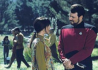
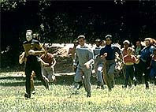
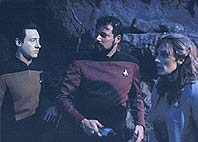
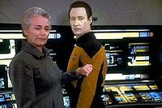
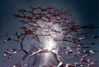

|
MANCHETE
DO EPISDIO
Histria
agradvel mas cheia de clichs
sela destino da Entidade Cristalina
Episdio
anterior | Prximo
episdio
Sinopse:
Data Estelar: 45122.3.
Enquanto realizam uma pesquisa em uma colnia da Federao em
Melona IV, Riker, Data e a dra. Crusher so interrompidos pela sbita
apario de uma enorme estrutura cristalina que comea a descer
em direo superfcie do planeta. Riker reconhece
imediatamente o objeto como a Entidade Cristalina, e imediatamente
ordena a evacuao da colnia e coordena a busca de um abrigo
para os habitantes.
 O
grupo se esconde em uma caverna enquanto a entidade consome todas as
formas de vida do planeta, transformando-o em um enorme deserto. As
formaes rochosas da caverna impedem o contato do grupo avanado
com a Enterprise, mas a tripulao a bordo, cada vez mais
preocupada com as estranhas atividades ocorrendo na superfcie de
Mekona, eventualmente envia um grupo de resgate e encontra os
sobreviventes.
Todos so transportados para a Enterprise, onde eles encontram a
cientista Kila Marr, que investiu todos os seus esforos estudando
a Entidade Cristalina, depois que seu filho morreu em Omicron Teta,
colnia em que Data foi criado. Picard sugere que Data ajude Marr
em sua investigao, mas a pesquisadora contrria idia,
lembrando Picard de que Lore, irmo de Data, havia atrado a
Entidade Cristalina para Omicron Teta. Mesmo assim, o capito
decide que Data deve permanecer em parceria com ela.
Aos poucos, a cientista comea a confiar mais em Data, conforme ele
apresenta resultados importantes, capazes de rastrear o paradeiro da
entidade. Marr fica furiosa, entretanto, ao descobrir que Picard no
tem inteno de matar a criatura, mas sim estabelecer contato.
Data alivia um pouco de seu sofrimento ao revelar algumas das memrias
do filho dela que haviam sido implantadas em seu crebro positrnico,
onde fica claro que o filho no culpava Marr pelo trgico desastre
no planeta.
 Em
meio a tudo isso, a Enterprise recebe um pedido de socorro de uma
nave sendo atacada pela Entidade Cristalina. Quando ela chega, j no
h sobreviventes. Riker comea a pensar se no seria o caso de
destruir a criatura, mas Picard no hesita. Ao mesmo tempo, Data
mantm suas tentativas de estabelecer contato antes que a entidade
volte a matar.
A tripulao consegue finalmente estabelecer algum tipo de
contato, mas Marr regula a transmisso para produzir vibraes
nocivas criatura, destruindo-a. O ser explode no espao,
deixando a pesquisadora a pensar se a vingana valeu o preo de
sua carreira como cientista.
Comentrios:
"Silicon
Avatar" pega um dos ns deixados por "Datalore",
da primeira temporada da srie --a existncia dessa enorme
entidade de cristal capaz de consumir toda forma de vida que passa
pelo seu caminho. O outro n de "Datalore",
o paradeiro do irmo de Data, foi desatado em "Brothers",
da quarta temporada.
 A
grande virtude desse episdio manter-se consistente com o que
foi estabelecido na srie, tanto em termos de caracterizao dos
personagens como em termos de continuidade. Sempre interessante
dar continuidade a uma histria iniciada em outro episdio e,
quando bem refletidos pelo roteiro, os tripulantes da Enterprise
sempre so uma boa companhia. Esses dois elementos fazem deste
segmento uma hora agradvel frente da televiso.
Entretanto, a histria est muito longe de ser brilhante. No h
nada de imprevisvel a respeito de seu desenrolar. Alguns clichs
so at incmodos, no por serem inadequados, mas por j terem
sido usados muitas vezes. A mania de colocar personagens em situao
de preconceito para com Data j virou lugar comum. E todo mundo
sabe que o resultado final o mesmo: ao longo de uma hora, nosso
andride predileto ir convencer seu adversrio de suas boas
intenes e de sua nobreza.
A mesma coisa acontece aqui. Pelo menos, a razo no a mesma de
sempre, o fato de Data ser uma mquina. O motivo sua ligao
com Lore, o que coloca a questo de forma ligeiramente diferente
(embora, em ltima anlise, no mude muito, j que o preconceito
parte do pressuposto de que Data pode ter o mesmo efeito com a
Entidade Cristalina que Lore pelo fato de os dois serem mquinas idnticas).
 Algumas
cenas conseguem imprimir drama e realidade ao sofrimento de Kila
Marr. A seqncia em que Data reproduz as memrias do filho dela
e a cientista, tomada pela emoo, reage ao andride como se
fosse de fato seu filho memorvel. Uma grande atuao da
convidada Ellen Geer.
Outro clich a "morte da mocinha", executada somente
para trazer alguma carga dramtica seqncia do ataque da
Entidade Cristalina colnia --algum precisava morrer para dar
o tom malvolo da criatura, e nada melhor que um potencial
interesse romntico de nosso gal de planto, William Riker.
O terceiro clich, e o mais importante, pois move o episdio
frente, a "sndrome de Moby Dick" que afeta a dra.
Marr. Sua busca por vingana bastante compreensvel, e ganha
vida na atuao de Geer, mas no deixa de ser um tema repetido ad
eternum em Jornada. A diferena aqui que ela consegue
finalizar seus planos, apesar da oposio de Picard e da tripulao
da Enterprise.
O maior mrito do episdio foi ter resgatado a Entidade Cristalina
do rol dos inimigos maniquestas de Jornada. Ela havia sido
apresentada de forma mope nesse formato durante a primeira
temporada da srie, mas ganhou uma nova conotao na viso de
Picard de que ela, como todas as outras criaturas, estava apenas
buscando a sobrevivncia. No que isso no seja mais um padro
repetitivo no franchise, mas muito melhor do que a definio
"a malvada criatura do espao" que foi aplicada em "Datalore".
 Do
ponto de vista visual, o episdio maravilhoso. O ataque da
entidade ao planeta, com sua aproximao tomando conta do cu,
por si s, vale o episdio. S a seqncia de destruio de
criatura que ficou devendo um pouco --a exploso especificamente no
condiz com a beleza da entidade.
"Silicon Avatar" foi um bom meio de colocar um
ponto final "saga" da Entidade Cristalina. Nada que se
compare aos episdios que o precederam no incio da temporada, mas
ainda assim interessante o suficiente.
Citaes:
Marr - "A
girlfriend? Oh, I never knew about that. Of course, the last person
he would tell was his mother. What was she like?"
("Uma namorada? Oh, eu nunca soube disso. Claro, a ltima
pessoa a quem ele contaria era sua me. Como ela era?")
Data - "He enjoyed her kindness, her gentleness, her
physical attributes."
("Ele apreciava sua bondade, seu jeito gentil, seus atributos fsicos.")
Trivia:
 Saiba tudo sobre a Entidade Cristalina:
Saiba tudo sobre a Entidade Cristalina:
uma forma de vida espacial de origem
desconhecida, cuja estrutura lembra um floco de neve gigante.
Aparentemente a Entidade Cristalina sobrevive de absorver a energia
de formas de vida biolgicas em planetas, deixando para trs
superfcies inteiramente devastadas. Ela foi a responsvel pela
destruio da colnia de Omicron Teta em 2336, onde causou a
morte de todo os habitantes locais. Data e Lore foram construdos
nesta colnia pelo Dr. Noonien Soong, mas escaparam ilesos do
ataque da Entidade, provavelmente por estarem desligados no momento
da investida, ou por serem formas de vida artificiais. Quem atraiu a
Entidade ao planeta foi Lore. O dr. Noonien e a dra. Juliana Soong
escaparam do ataque em um casulo de fuga, mas a dra. Juliana foi
seriamente ferida ("Inheritance", stimo ano). Nos
anos seguintes, a dra. Kila Marr, cujo filho morreu em Omicron Teta,
estudou a Entidade examinando 12 locais que ela atacou, incluindo o
planeta Forlat III.
Ficha
tcnica:
Histria de Lawrence V. Conley
Roteiro de Jeri Taylor
Direo de Cliff Bole
Exibido em 14/10/1991
Produo: 104
Elenco:
Patrick Stewart como
Jean-Luc Picard
Jonathan Frakes como William Thomas Riker
Brent Spiner como Data
LeVar Burton como Geordi La Forge
Michael Dorn como Worf
Gates McFadden como Beverly Crusher
Marina Sirtis como Deanna Troi
Elenco convidado:
Ellen Geer
como dra. Kila Marr
Susan Diol como Carmen Davila
Episdio
anterior | Prximo
episdio
|